42 tests across 4 files · Vitest + React Testing Library + jsdom
| Test File | Tests | Status | Coverage |
|---|---|---|---|
| utils.test.ts | 20 | PASSED | filtersToExtra (5) scaleValue (6) scaleLabel (4) comparatorLabel (5) |
| useBookmarks.test.ts | 8 | PASSED | CRUD localStorage 20-item cap corrupt data |
| useLongPress.test.ts | 6 | PASSED | delay callback cancel touchEnd cancel touchMove didLongPress reset |
| useSavedDimensions.test.ts | 8 | PASSED | save/remove unique IDs append order localStorage |
Run command: cd frontend && npm test · Framework: Vitest 4.0.18 + React Testing Library + jsdom
market_id when markets selectedproduct filter to brand_id keydidLongPress on new touch start11 scenarios via Playwright MCP · Desktop + Mobile · Live backend
| # | Test Scenario | Status | Key Verifications |
|---|---|---|---|
| 1 | Desktop Initial Load | PASSED | Header, KPI strip (4 cards), tree table (5 TAs), sparklines |
| 2 | Tree Table Expansion | PASSED | Oncology → 7 brands, quarterly data, child indentation |
| 3 | Scale Switching ($B/$K/$M) | PASSED | Values update: $50.20B → $50,196,100K → $50196.1M |
| 4 | Landing Tab Navigation | PASSED | 2025 Scenario Comparison table, monthly columns |
| 5 | Phased Tab Navigation | PASSED | Same quarterly layout, filter state persists |
| 6 | Filter Panel | PASSED | Year, View By, Comparator, Market, TA, Product sections |
| 7 | Market Filter (US) | PASSED | Revenue drops $50,196M → $39,970M, chip appears |
| 8 | Assistant Drawer UI | PASSED | Input, mic button, send button, chat history |
| 9 | Mobile Responsive (375px) | PASSED | 2x2 KPI grid, compact rows, swipe dots |
| 10 | Dimension Picker | PASSED | TA → Brand → Market hierarchy, reorder, save |
| 11 | Chart/TreeMap Toggle | PASSED | Horizontal bars, color coding, variance % |
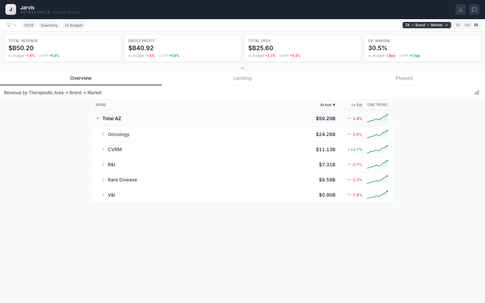
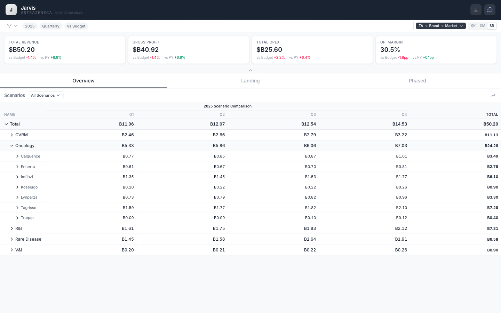
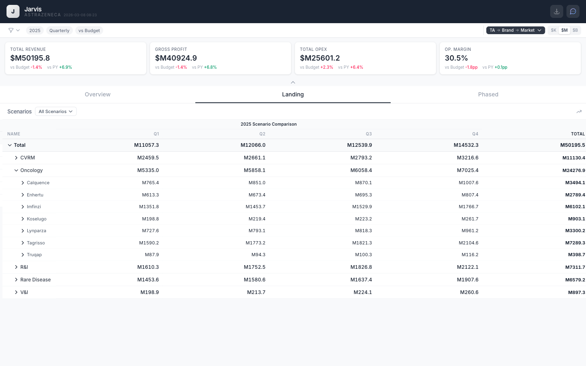
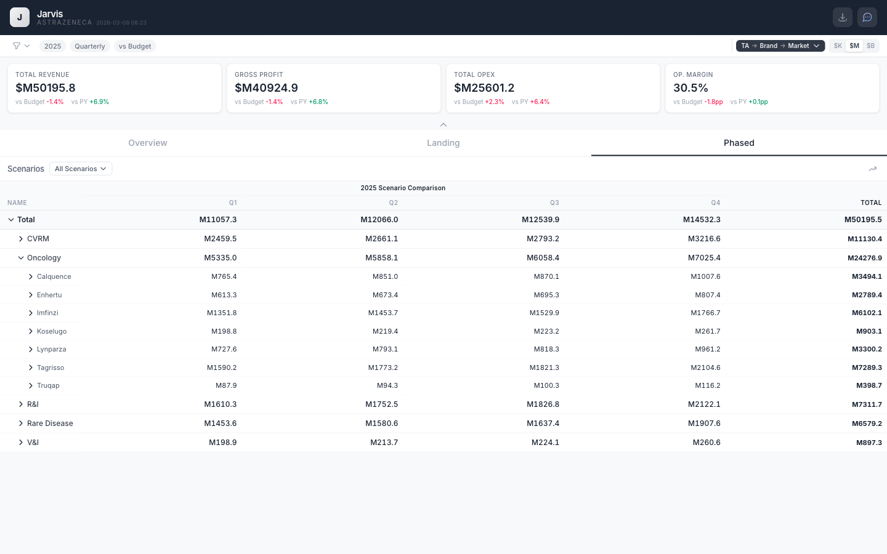
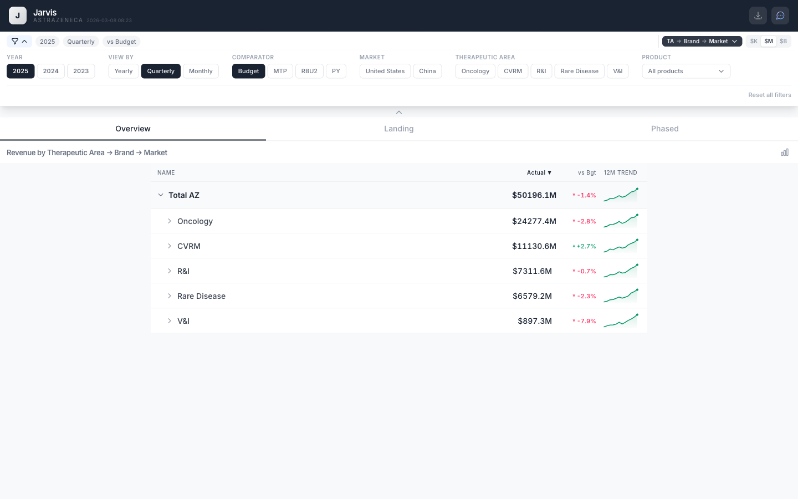
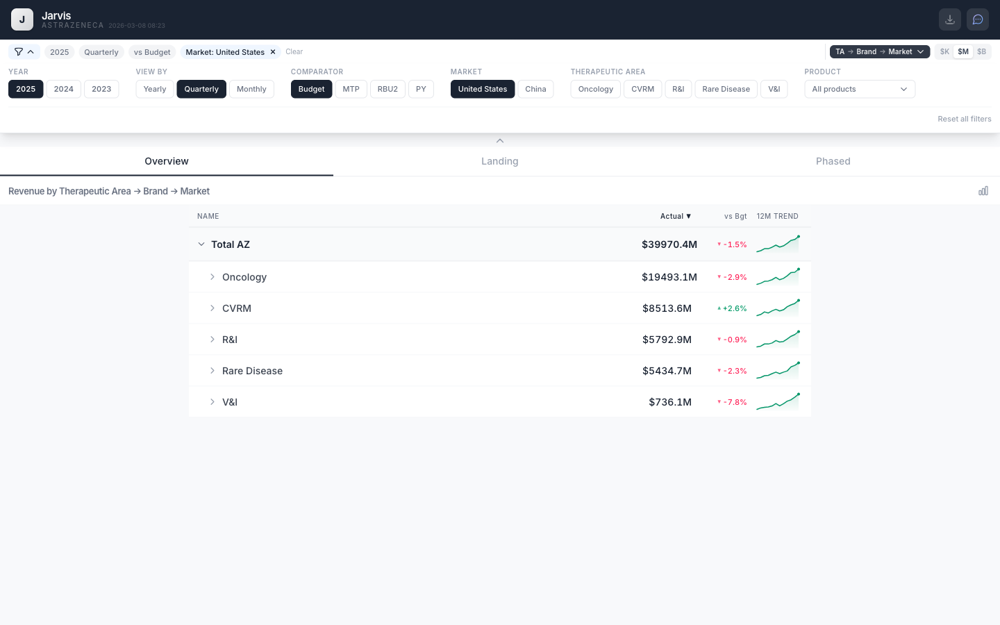
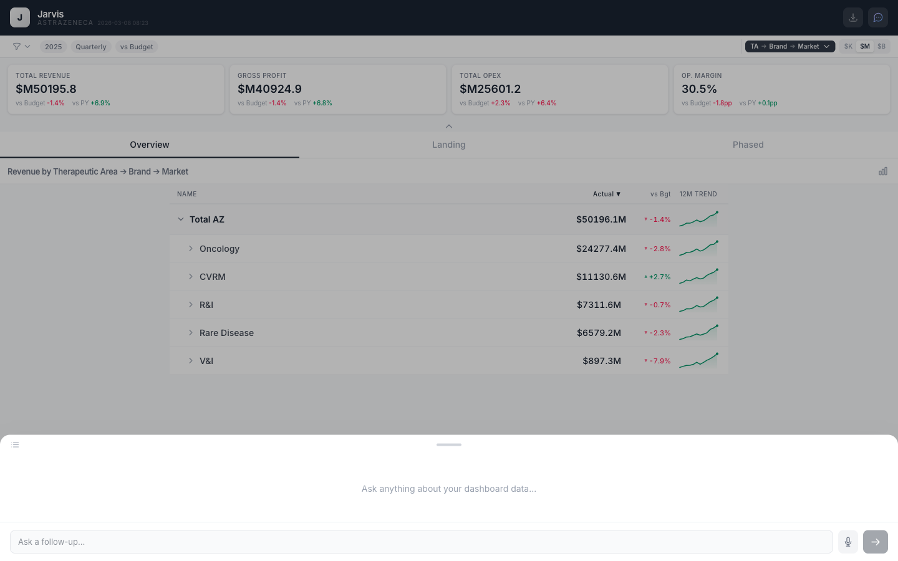
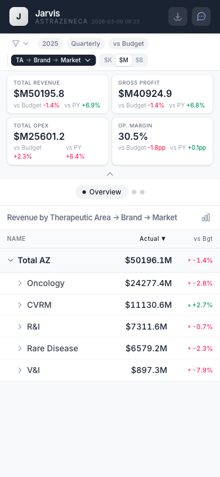
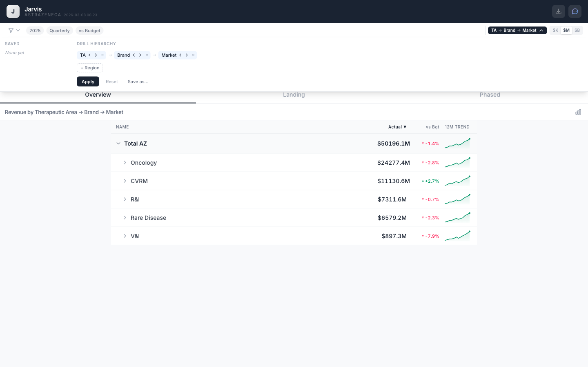
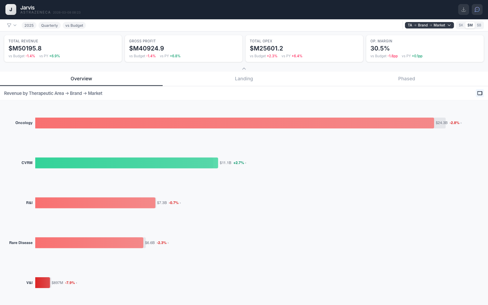
8 scenarios testing 3 response modes · Claude Sonnet 4.6 via AWS Bedrock · ~$0.64 cost
| # | Query | Mode | Status | Response Features |
|---|---|---|---|---|
| 1 | "What is Total Revenue for 2025?" | Mode 3: Analyze | PASSED | Facts Interpretation 1 tool, 2 steps |
| 2 | "Show me Oncology only" | Mode 2: Configure | PASSED | Config card TA: Oncology tag Apply button |
| 3 | "How are we doing?" | Mode 1: Clarify | PASSED | Clarification question 5 suggestions Text input |
| 4 | "Which Oncology brands are beating or missing plan?" | Mode 3: Analyze | PASSED | Table visual Interpretation Hypothesis |
| 5 | "Compare US vs China revenue for 2025" | Mode 3: Analyze | PASSED | Facts (4 items) Table visual Hypothesis |
| 6 | "Break down variance vs budget by TA" | Mode 3: Analyze | PASSED | Waterfall chart Recommendations Facts + Interp |
| 7 | "Switch to monthly view, actuals vs MTP, 2024" | Mode 2: Configure | PASSED | 5 config tags Apply button Carry-forward filter |
| 8 | "Top 5 brands by revenue in 2025?" | Mode 3: Analyze | PARTIAL | Table visual (correct) No <facts> tag emitted |
Model: eu.anthropic.claude-sonnet-4-6 · Max tokens: 4096 · Temperature: 0.1 · Max iterations: 10
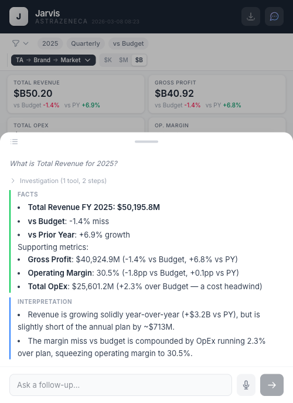
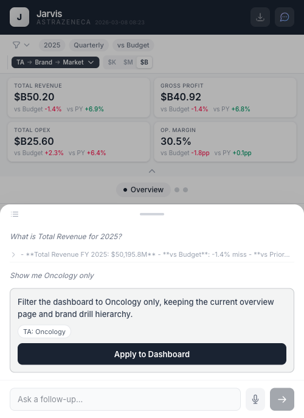
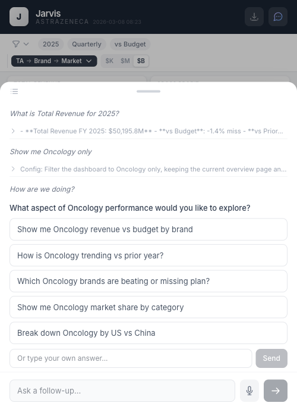
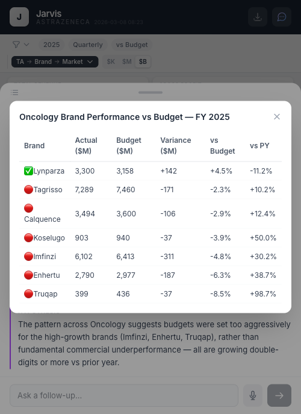
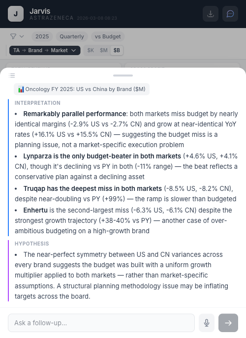
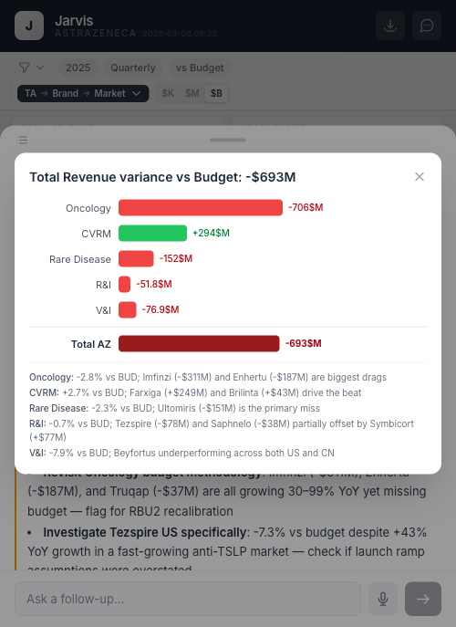
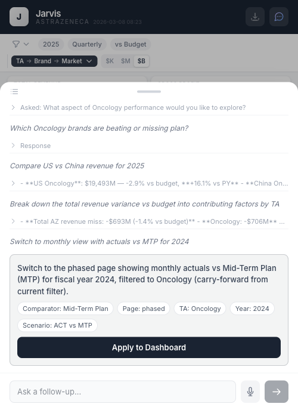
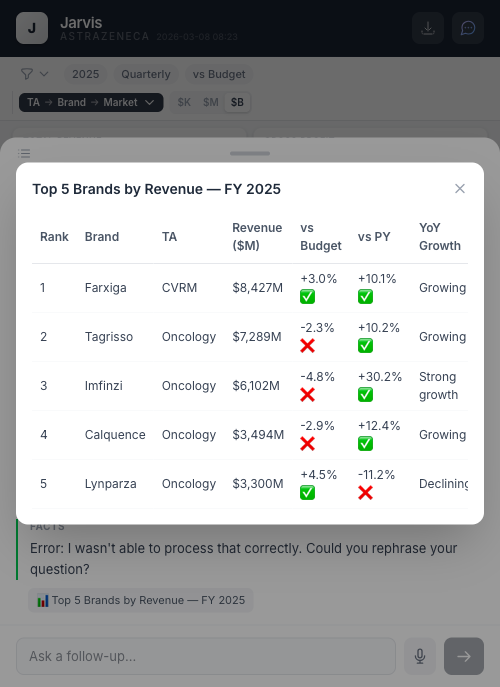
42 unit tests + 11 browser E2E + 7/8 AI tests